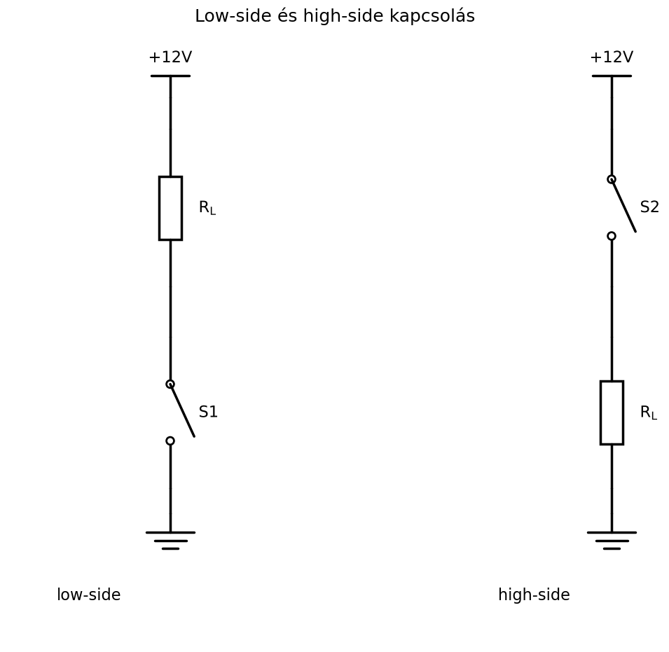
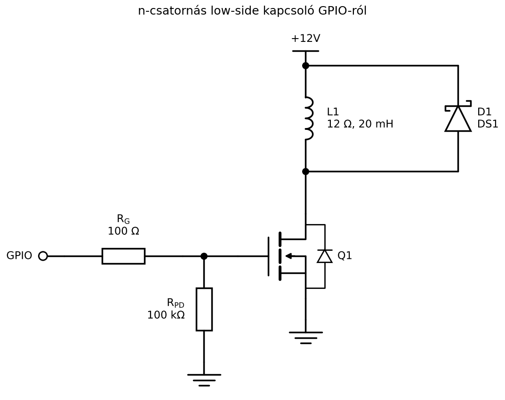

Ebben az alfejezetben MOSFET-ből kapcsolót tervezel: n-csatornás eszközzel a terhelés „alján” (low-side), p-csatornással a „tetején” (high-side), és megérted, miért kell egy n-csatornás high-side kapcsolóhoz a tápfeszültségnél magasabb gate-feszültség. A végén indokoltan tudsz választani, és minden alkatrésznek lesz mérete.
A szenzormodul szolenoidját (12 V, 1 A) egy 3,3 V-os GPIO vezérli. Egy MOSFET és két ellenállás elegendő, de három kérdésre rosszul válaszolva a modul meghibásodhat: mi történik az indítás vagy a reset alatt, amikor a GPIO még nem hajt semmit; elég-e a 3,3 V a teljes bekapcsoláshoz; és mi legyen, ha a terhelésnek az egyik vége kötelezően a földön van (például a háza fémes és a vázhoz csatlakozik)?
Két hely van a kapcsolónak: a terhelés és a föld között, vagy a táp és a terhelés között.

Low-side kapcsolásnál a terhelés állandóan a tápon van, a kapcsoló a visszatérő utat szakítja meg. High-side kapcsolásnál a terhelés egyik vége állandóan a földön van, a kapcsoló a tápot adja rá. A háztartási analógia: a lámpa kapcsolója is a „táp felőli” vezetéket szakítja meg, hogy kikapcsolva a foglalatban ne legyen feszültség – a törpefeszültségű elektronikában ugyanez a megfontolás dönt, hogy mit jelent a „kikapcsolt” terhelés egy zárlatnál.
Egy MOSFET-nél a döntő kérdés: hova van kötve a source, hiszen a gate-feszültség ahhoz képest számít. Low-side n-MOSFET-nél a source a földön van, a gate-et a GPIO közvetlenül hajthatja. High-side helyzetben a source feszültsége vagy a tápon van (p-MOSFET), vagy a terheléssel együtt mozog (n-MOSFET) – ezért bonyolultabb.
Definíció. Low-side kapcsoló az a kapcsolóelem, amely a terhelés és a föld (a visszatérő vezeték) között van; high-side kapcsoló az, amely a tápsín és a terhelés között van.

A működés. Magas GPIO-nál , Q1 az ohmos tartományban vezet. Alacsony GPIO-nál , Q1 zárva. A D1 szabadonfutó dióda kikapcsoláskor átveszi a tekercs áramát (részletesen: Biztonságos működési tartomány, lavina és induktív terhelés); nélküle a drain feszültsége veszélyesen megugrik.
(soros gate-ellenállás). A gate egy néhány száz pikofarados kondenzátor. Bekapcsoláskor a GPIO kimeneti ellenállása (, a mintaadatból ) és korlátozza a csúcsáramot:
Itt 100 Ω-mal 22 mA. Ez néhány száz nanoszekundumig tartó töltőimpulzus, nem tartós áram; hogy a vezérlő elviseli-e, az adatlapja dönti el. Ha a 8 mA-t impulzusra is be kell tartani, nagyobb (kb. 470 Ω) kell – cserébe lassabb lesz a kapcsolás (a Kapcsolási folyamat: gate-töltés, Miller-plató és meghajtás témája). ezenkívül csillapítja a gate-hurok csengését.
(lehúzó ellenállás). Reset alatt, indításkor vagy programozás közben a GPIO nagy impedanciájú (Hi-Z): nem hajt semmit. A szigetelt gate töltése ilyenkor ott marad, ahol volt, és szivárgó áram, zaj vagy a drain felőli átcsatolás feltöltheti. Az a source-ra (földre) köti a gate-et. Két ellenőrzés:
Egység: .
A 100 kΩ feltétele: a GPIO reset alatt valóban nagy impedanciájú. Sok mikrovezérlő azonban reset alatt belső felhúzót kapcsolhat be (adatlapfüggő). Ha ez legalább 25 kΩ (mintaadat), a 100 kΩ-mal alkotott osztó a gate-et 3,3 V-ból 2,64 V-ra emeli, és a MOSFET bekapcsol. Ekkor a lehúzónak az osztót a legkisebb küszöb alatt kell tartania ( kΩ, pl. 4,7 kΩ); a feltételt a Mikrovezérlő GPIO illesztése terhelésekhez alfejezet vezeti le. Mindig nézd meg a vezérlő adatlapjában a lábak reset alatti állapotát.
A kapcsoló négy ellenőrzése (a 80 %-os kihasználtsági határ projektszabály, nem fizikai törvény):
PWM-nél ehhez hozzájön a gate-töltés () és a kapcsolási veszteség (a következő alfejezet témája), a tok kiválasztásához pedig a hőellenállás.
Az ábra jobb oldala mutatja a buktatót: az 1,8 V-ról is garantált MN_LL18 értéke csak 20 V, ezért a 12 V-os modulban (30 V-os tranzienssel) nem használható. Egy paraméter javítása másikat ronthat.
A p-csatornás MOSFET source-a a tápon van, és akkor vezet, ha a gate alacsonyabb nála legalább a tesztpont feszültségével (). Kikapcsolt állapotban a gate a tápfeszültségen van. A 3,3 V-os GPIO erre közvetlenül nem képes (12 V-os tápnál 3,3 V-os „magas” szinten is V maradna: a MOSFET sosem zárna). Kell egy szintillesztő: egy kis n-csatornás MOSFET (vagy npn tranzisztor), amely a gate-et a föld felé húzza.
A képletek feltétele: Q2 bekapcsolt ellenállása elhanyagolható -hez képest (néhány ohm a 2,2 kΩ-hoz képest), a Zener ideális törtvonalas. Egység: ohm per ohm, tehát volt.
A statikus fogyasztás bekapcsolva mA. A kapcsolás lassú: kikapcsoláskor a gate-et csak tölti vissza, a gate-töltés ( = 3,5 nC, mintaadat) kb. 0,35 mA-rel vándorol, ami 10 µs nagyságrendű átmenetet ad. Be/ki kapcsolásra jó, 20 kHz-es PWM-re nem: oda meghajtó IC kell.
Az n-csatornás eszköz jobb (kisebb azonos áron), de high-side helyzetben a source a terhelés tetején van: bekapcsolva a feszültsége közel a tápé, 12 V. A gate-nek tehát kb. V kell – több, mint bármelyik sín.
A bootstrap (saját magát felemelő) megoldás egy kondenzátort és egy diódát használ:
Bekapcsolás alatt feszültsége csökken: a gate feltöltése töltést vesz el, a meghajtó nyugalmi árama és a szivárgás () pedig a bekapcsolási idő () alatt folyamatosan fogyaszt. Ha a megengedett esés :
Egység: . Az MN1-nél ( = 8 nC, 100 µA, 20 kHz-es PWM, legfeljebb 45 µs bekapcsolás) V-ra nF; 220 nF esetén az esés 57 mV, és a gate V, a 4,5 V-os tesztpont fölött. Következmény: a bootstrap-es high-side kapcsoló nem maradhat tartósan bekapcsolva (1 ms alatt már 0,49 V-ot esne); a kondenzátort időnként újra kell tölteni. Tartós bekapcsoláshoz töltéspumpa (kapcsolgatott kondenzátorokkal előállított magasabb feszültség) kell. A gyakorlatban kész high-side meghajtó IC vagy intelligens kapcsoló (smart high-side switch: MOSFET, meghajtó, áramkorlát, hővédelem és hibajelzés egy tokban) a megoldás.
| Szempont | Low-side | High-side |
|---|---|---|
| Vezérlés | közvetlenül GPIO-ról | szintillesztő vagy meghajtó kell |
| Eszköz | n-MOSFET (olcsó, kis ) | p-MOSFET, vagy n-MOSFET + bootstrap |
| Terhelés a földhöz képest | kikapcsolva is a tápon lebeg | kikapcsolva a földön van |
| Terhelésvezeték zárlata a vázra | a terhelés bekapcsol, a kapcsoló nem tud segíteni | a kapcsoló megszakítja |
| Áramérzékelés | a söntet a source és a föld közé teheted | magas oldali mérő kell |
Egyszerű, a panelen belüli terhelésnél a low-side a természetes. Ha a terhelés vezetéken kimegy a modulból, a váza földelt, vagy a vezeték sérülése veszélyes, a high-side a biztonságosabb.
Továbbvitt eredmény. Low-side n-MOSFET: a legrosszabb csúcsra tartalékkal, a tényleges (legkisebb) gate-feszültségen garantáltan, soros , gate–source . High-side p-MOSFET: , Zenerrel korlátozva. n-csatornás high-side: a source fölötti gate-feszültség bootstrappel () vagy töltéspumpával. Erre épít a Mikrovezérlő GPIO illesztése terhelésekhez, a Tápbemeneti védelmek: biztosíték, polaritás, túlfeszültség, áramlökés (kapacitív bekapcsolás) és a 3. záróprojekt: MOSFET-es meghajtó induktív terheléshez.
Feladat. A szolenoidot high-side kapcsolóval kell vezérelni (a váza földelt). MP1 (mintaadat: 85 mΩ @ 4,5 V, 55 mΩ @ 10 V, V), = 10 kΩ, = 2,2 kΩ, 12 V-os Zener. A bemenet 9–16 V, a tranziens 30 V.
Józanész: a szintillesztő bekapcsolva kb. 1 mA-t fogyaszt, a terhelés 1 A-ének ezrede – elfogadható.
Az elkit.power a low-side ellenőrzést és a high-side
gate-kört is elvégzi.
from elkit import power as pw, devices as dv, units
for m, u_gpio in ((dv.MN1, 3.3), (dv.MN_STD, 3.3), (dv.MN_LL18, 1.8)):
r = pw.size_low_side_switch(m, u_gpio=u_gpio, i_load=1.0, u_peak=30.45)
print(f"{m.name:8s} {u_gpio} V: {'rendben' if r.ok else 'NEM megfelelő'}")
if r.ok:
print(f" R_DS(on) = {units.fmt(r.r_ds_on, 'Ω')}, T_J = {r.t_j:.1f} °C")
for w in r.warnings:
print(" ", w.split(" – ")[0])MN1 3.3 V: rendben
R_DS(on) = 59.7 mΩ, T_J = 67.5 °C
MN_STD 3.3 V: NEM megfelelő
MN_STD: |U_GS| = 3.3 V-on nincs garantált R_DS(on) (a legkisebb tesztpont 10 V)
MN_LL18 1.8 V: NEM megfelelő
U_DS kihasználtság 152 % > 80 %for u in (9, 12, 16, 30):
a = pw.highside_pmos_gate(u, 10e3, 2.2e3)
b = pw.highside_pmos_gate(u, 10e3, 2.2e3, u_zener=12.0)
print(f"{u:2d} V: Zener nélkül {a.u_sg:5.2f} V ({'ok' if a.ok else 'TÚL'}), "
f"Zenerrel {b.u_sg:5.2f} V, I_Z = {units.fmt(b.i_zener, 'A')}")
from elkit import extra_elch14 as x14
c = x14.bootstrap_capacitor(8e-9, 0.1, 100e-6, 45e-6)
print(f"C_B legalább {units.fmt(c, 'F')}; 220 nF-dal ΔU = "
f"{units.fmt(x14.bootstrap_droop(220e-9, 8e-9, 100e-6, 45e-6), 'V')}") 9 V: Zener nélkül 7.38 V (ok), Zenerrel 7.38 V, I_Z = 0 A
12 V: Zener nélkül 9.84 V (ok), Zenerrel 9.84 V, I_Z = 0 A
16 V: Zener nélkül 13.11 V (ok), Zenerrel 12.00 V, I_Z = 618 µA
30 V: Zener nélkül 24.59 V (TÚL), Zenerrel 12.00 V, I_Z = 6.98 mA
C_B legalább 125 nF; 220 nF-dal ΔU = 56.8 mVA1. A GPIO kimeneti ellenállása 50 Ω. Mekkora a gate csúcsárama = 100 Ω-nál és 470 Ω-nál? Melyik fér bele a 8 mA-es ajánlásba?
A2. Egy rajzon = 1 kΩ, = 10 kΩ (a gate-en), elhanyagolható. Mekkora 3,3 V-os, illetve a legrosszabb 2,9 V-os GPIO-szintnél? Mit jelent ez az MN1 garanciájára?
B3. p-MOSFET high-side kapcsoló Zener nélkül: = 10 kΩ. Számold ki -t 9 V és 30 V bemenetnél. Megfelel-e MP1-nek? Mit okoz az 1 %-os ellenállástűrés?
B4. Bootstrap-meghajtás MN1-gyel 50 kHz-es PWM-nél (legfeljebb 19 µs bekapcsolás), 100 µA fogyasztás, V. Mekkora kell, és melyik E6-os értéket választod?
B5. 5 V-os sínen 0,3 A-es LED-szalagot kell kapcsolni 1,8 V-os GPIO-ról. Válassz mintatípust, és számold ki a vezetési veszteséget.
C6. (Programozás) = 10 kΩ mellett keresd meg az E24-sor azon értékeit, amelyekkel Zener nélkül 9 V bemeneten V, 30 V-on pedig V (20 % tartalék a 20 V-os határhoz).
C7. A terhelés egy hosszú vezetéken, fémházban van. A vezeték megsérül, és a kapcsolt ér a vázhoz (földhöz) ér. Mi történik low-side és high-side kapcsolásnál?
A low-side n-MOSFET közvetlenül hajtható: a feszültségtartalék, a tényleges gate-feszültségen garantált és a hő dönt; soros korlátozza a gate-áramlökést, a gate–source reset alatt zárva tart. A high-side p-MOSFET szintillesztőt kér; -t osztó állítja be, és Zener védi a gate-et a legnagyobb bemenetnél is. A high-side n-MOSFET gate-je a source fölé kell: bootstrap (, nem lehet tartósan bekapcsolva), töltéspumpa vagy kész meghajtó. Induktív terheléshez szabadonfutó út kell, kapacitívhoz áramkorlát. A low/high-side választást a terhelés földelése és a vezetékhibák viselkedése dönti el. Minden esetben ellenőrizd a legrosszabb feszültségcsúcsot (tranzienssel együtt) és a legkisebb vezérlőfeszültséget, valamint a vezérlő reset alatti lábállapotát: aktív belső felhúzónál a 100 kΩ-os lehúzó már nem elég.
A1. 100 Ω-nál mA; 470 Ω-nál mA, ez fér bele a 8 mA-be. A nagyobb ellenállás lassabb kapcsolást ad.
A2. Az osztó : 3,3 V-ból 3,0 V, 2,9 V-ból 2,64 V. Ez még a 2,5 V-os tesztpont fölött van, de a tartalék kicsi (a küszöb- és ellenállás-szórás mellett is); célszerűbb = 100 kΩ.
B3. 9 V: V; 30 V: 15 V. A 20 V-os határ alatt, de 9 V-on pontosan a tesztponton: 1 %-os tűrésnél legrosszabb esetben = 9,9 kΩ, = 10,1 kΩ, V V. Nem garantált: kisebb (pl. 9,1 kΩ) kell.
B4. A képletbe helyettesítve (nC/V = nF): nF. 100 nF éppen a határon lenne (tűrés, DC-bias miatt kevesebb lehet), ezért 220 nF a jó választás.
B5. Az MN_LL18 1,8 V-on garantál (80 mΩ), = 20 V bőven elég 5 V-ra. mW. Szabadonfutó dióda itt nem kell (nem induktív terhelés), de a hosszú vezeték induktivitása miatt védelem hasznos lehet.
C6.
from elkit import eseries
good = []
for decade in (1e3, 1e4):
for base in eseries.series_values("E24"):
rs = base * decade
lo = pw.highside_pmos_gate(9.0, 10e3, rs).u_sg
hi = pw.highside_pmos_gate(30.0, 10e3, rs).u_sg
if lo >= 4.5 and hi <= 16.0:
good.append((rs, lo, hi))
for rs, lo, hi in good:
print(f"R_S = {units.fmt(rs, 'Ω'):>7}: 9 V-on {lo:.2f} V, 30 V-on {hi:.2f} V")R_S = 9.1 kΩ: 9 V-on 4.71 V, 30 V-on 15.71 V
R_S = 10 kΩ: 9 V-on 4.50 V, 30 V-on 15.00 VA 9,1 kΩ ad tartalékot mindkét oldalon; a 10 kΩ a B3 szerint tűréssel nem megfelelő.
C7. Low-side kapcsolásnál a kapcsolt ér a drain: a vázhoz érve a terhelés alsó vége a földre kerül, a terhelés a kapcsoló állapotától függetlenül bekapcsol, és a MOSFET nem tudja megszakítani. High-side kapcsolásnál a kapcsolt ér a kapcsoló kimenete: a zárlat a bekapcsolt kapcsolón át nagy áramot okoz, de a kapcsoló kikapcsolásával (áramkorlát, biztosíték) megszüntethető, kikapcsolva a terhelés feszültségmentes.